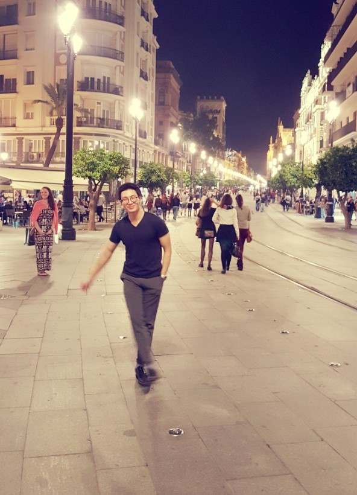
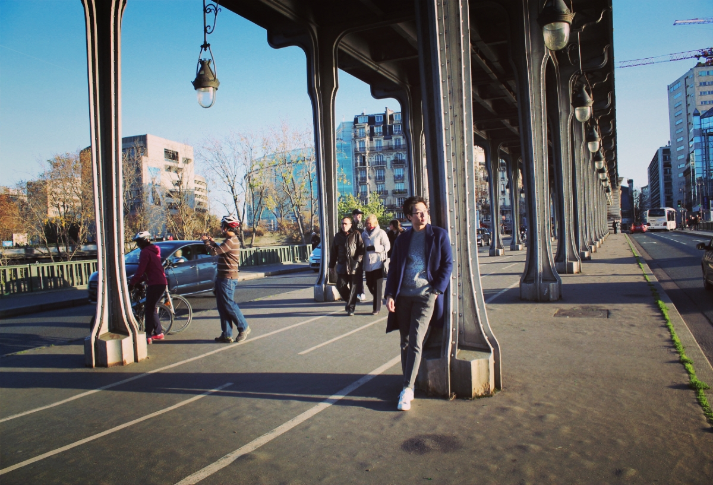
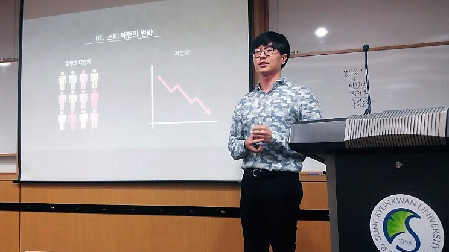
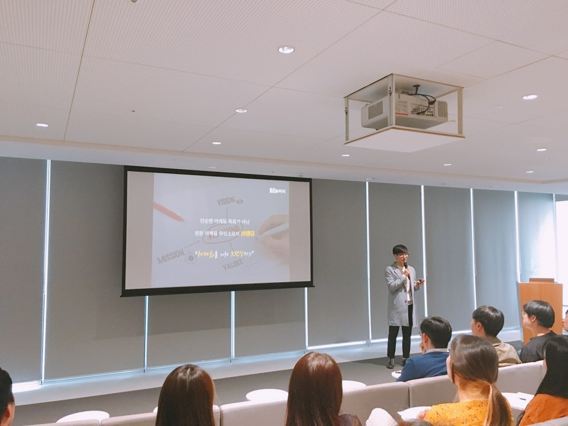

혼자 모든 것을 계획하고 진행했던
첫 프로젝트
2015년 11월, 군 제대 후 저는 홀로 40일간의 유럽여행을 떠났습니다. 제 인생에 있어 처음으로 혼자한 여행이자, 혼자 간 해외 여행이자, 혼자 처음부터 끝까지 모든 것을 계획하고 실행한 프로젝트였습니다. 40일의 여행이였지만 준비는 6개월정도를 하였습니다.
공항에 도착해 비행기를 타고 날아가 제 첫번 째 유럽의 도시는 마드리드 였습니다. 마드리드에 내리자 마자 저는 막막해지기 시작했습니다. 핸드폰 데이터는 안터지고, 영어도 잘 안통하고 첫 외국길이라 길을 모르는것 또한 당연했습니다. 하지만 다행히도 공항 직원분들은 영어를 하실줄 알았고 한국인으로 추정되는 분들도 따라가며 지도를 보며 간신히 숙소에 도착했습니다. 그 후 40일간의 여행은 지도를 찾다찾다 안되면 물어물어 가며 혹은 제 감각을 믿어보며 곳곳을 여행해 나갔습니다.

모두가 다녀오는 유럽여행인데 왜 얘기를 하냐 싶으실겁니다. 하지만 저에게 있어 이 여행은 제 인생에 있어 큰 변화를 줍니다. 바로 모르면 "질문"할 수 있게 되었습니다. 그 전에 저는 소심하고 내성적인 성격과 전형적인 한국식 교육으로 궁금증이 생겨도 묻어버리고 좇아가는 사람이었습니다. 그러나 낯선 곳에 혼자 떨어진 저는, 살아남기 위해, 추억을 간직하기 위해 낯선 이들에게 질문을 하였고 용기를 얻어 더 많은 질문들을 할 수 있게 되었습니다.
말하는 것이 두려웠던 소년에서
한 모임의 리더까지
어렸을 적 저에게 발표는 가장 두렵고 심장 떨리는 일이였습니다. 이 두려움을 극복하기 위해 저는 많은 도전들을 해왔습니다.

팀플 발표가 있을 때도 제가 발표를 자청하며 많은 발표를 하려고 노력했습니다. 그 중 가장 많은 발표를 할 수 있는 곳은 마케팅 학회를 들어간 뒤입니다. 성균관대 최고의 마케팅 학회 마술피리에 들어와 저의 두려움들을 극복해나갔습니다.

끊임없는 노력을 통해 학회원들의 지지를 얻어 회장이 되었습니다. 회장 때는 인생에서 가장 많은 발표 자리가 있었습니다. 매 모임마다 모임을 주도하고 리크루팅 기간에는 성균관대생들에게 학회를 소개하는 설명회도 진행하였습니다. 무엇보다 KT와의 산학협력에서 성균관대, 고려대, 중앙대, 이화여대, 4개의 학회와 실무진들 앞에서 학회를 소개하는 시간은 제가 드디어 이 모든 두려움을 극복했다는 장이 되었습니다.
마술피리에서 했던 전략서들
마케팅적 지식과 더불어 소비자 중심 사고를 바탕으로한
마케팅 로직과 창의성을 기를 수 있었습니다.
자체커리 콜드브루 마케팅 제안
자체커리 뚜레주르 신제품 제안
제 37회 제일기획 아이디어 페스티벌
제 12회 아모레퍼시픽 브랜드첼린지
본선진출작
산학협력 에이프릴스킨 마케팅 제안
제 29회 HS에드 대학생 광고대상
자체커리 요기요 마케팅 제안
자체커리 자라 마케팅 제안
KT 청춘기업 공모전
산학협력 빙그레 신제품 제안

개인발표 핀셋마케팅

개인발표 옴니채널